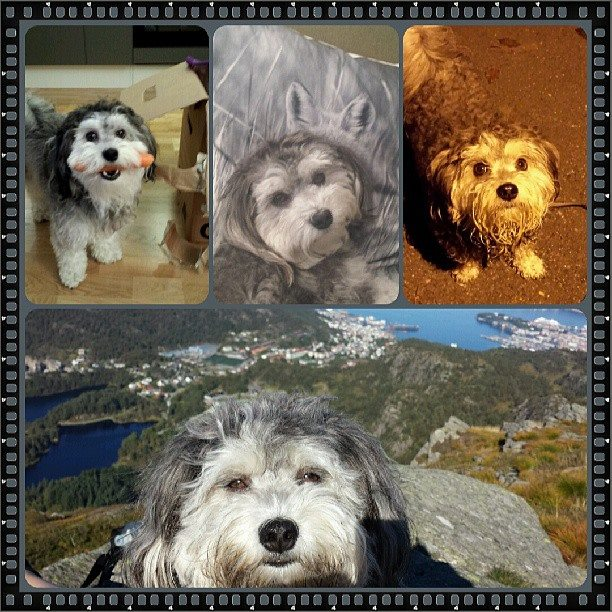

Google Cast Appz!
How to get started with Google Cast development
Oskar Kvamme / @oskarkvamme
This is my dog!
#CRAZYDOGPEOPLE
So, what is Google Cast?
Google Cast is..

- A streaming device/dongle
- Connected to your TV/Display (HDMI)
- WIFI
- Video
- Audio
- Cheap: 299 NOK/ 310 SEK
How can I stream to Google Cast?
- Google Cast enabled web apps
- Google Cast enabled IOS apps
- Google Cast enabled Android apps
Examples
- Netflix
- Youtube
- Google Music
But wait a minute!
Google Cast sort of runs Chrome :)
So...
We can do more then streaming!
HTML/CSS/Javascript :)
Actually..
This presentation, runs on Google Cast!!!!!

#madscience
Lets get started!
Setup
- Get a device!
- Run normal setup. Easy peasy lemon squeezy :)
- NB! Remember to enable "Send this Chromecast's serial number to Google..."
- Install chromecast extension for Chrome.
- Register your device on the Google Cast SDK Developer Console(5 EUR)
- Register a new app in the Developer Console
Reciver Apps
- Default Receiver
- Styled Media Receiver
- Custom Receiver
- Javascript/HTML/CSS
Implementation of receiver
castReceiverManager = cast.receiver.CastReceiverManager.getInstance();
castReceiverManager.onSenderDisconnected = function(event) {
if(castReceiverManager.getSenders().length == 0 &&
event.reason == cast.receiver.system.DisconnectReason.REQUESTED_BY_SENDER) {
window.close();
}
}
castReceiverManager.start();
Sender Apps
- Android Sender (Java)
- IOS Sender (Object-C)
- Chrome Sender (Javascript/HTML/CSS)
Implementation of sender (Custom sender)
var initApi = function(){
var sessionRequest = new chrome.cast.SessionRequest(applicationID);
var apiConfig = new chrome.cast.ApiConfig(sessionRequest,
sessionListener, receiverListener)
chrome.cast.initialize(apiConfig, onInitSuccess, onError);
};
window['__onGCastApiAvailable'] = function(loaded, errorInfo) {
if (loaded) {
initApi();
} else {
console.log(errorInfo);
}
}
More implementation
var onInitSuccess = function() {
var connectButton = $('#connect-button');
connectButton.removeClass('disabled');
};
connectButton.on('click', function(e){
e.preventDefault();
chrome.cast.requestSession(onRequestSessionSuccess, onLaunchError);
});
var onRequestSessionSuccess = function(e){
session = e;
$('#next, #prev').removeClass('disabled');
};
Messages
- Namespace
- urn:x-cast:chromecastappz
Messages on sender
$('#next').on('click', function(e){
e.preventDefault();
if(session === null) return;
var message = {
type: 'navigation',
action: 'next'
};
session.sendMessage(namespace, message, onMessageSuccess, onMessageError);
});
Messages on receiver
messageBus = castReceiverManager.getCastMessageBus(
namespace,
cast.receiver.CastMessageBus.MessageType.JSON
);
messageBus.onMessage = function(event) {
var sender = event.senderId;
var message = event.data;
if(message.type === 'navigation'){
navigate(message.action);
}
};
Thats it!

Degugging
http://CHROMECAST-IP:9222/
Media SDK
var mediaInfo = new chrome.cast.media.MediaInfo(currentMediaURL);
var request = new chrome.cast.media.LoadRequest(mediaInfo);
session.loadMedia(request,
onMediaDiscovered.bind(this, 'loadMedia'),
onMediaError);
var onMediaDiscovered function(how, media) {
currentMedia = media;
currentMedia.play();
}
Urls
- Documentation: https://developers.google.com/cast/
- Google Cast SDK Developer Console: https://cast.google.com/publish/#/overview
Thats all Folks!